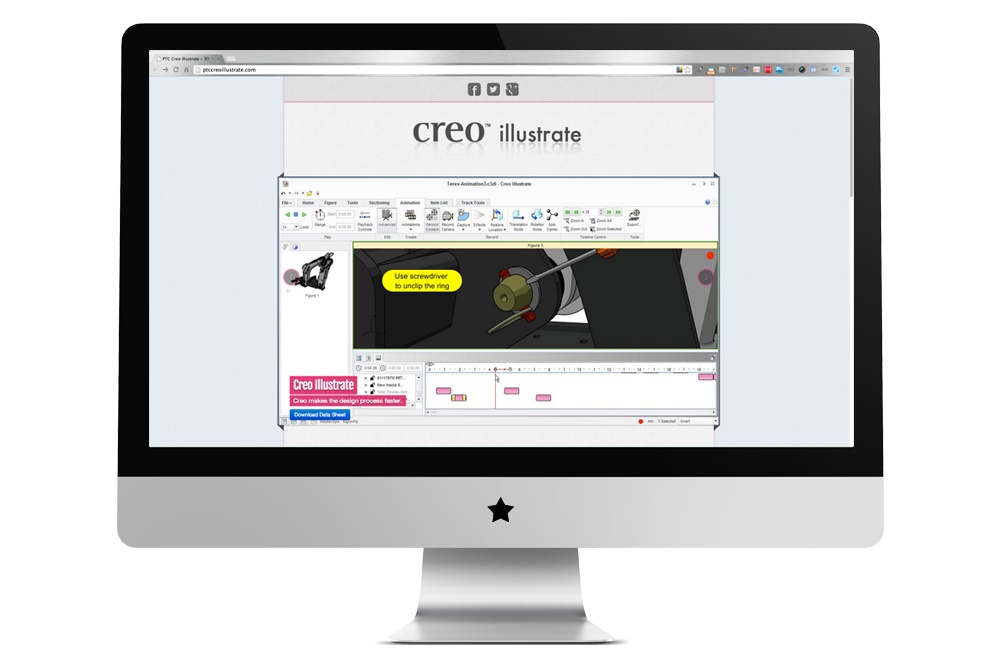
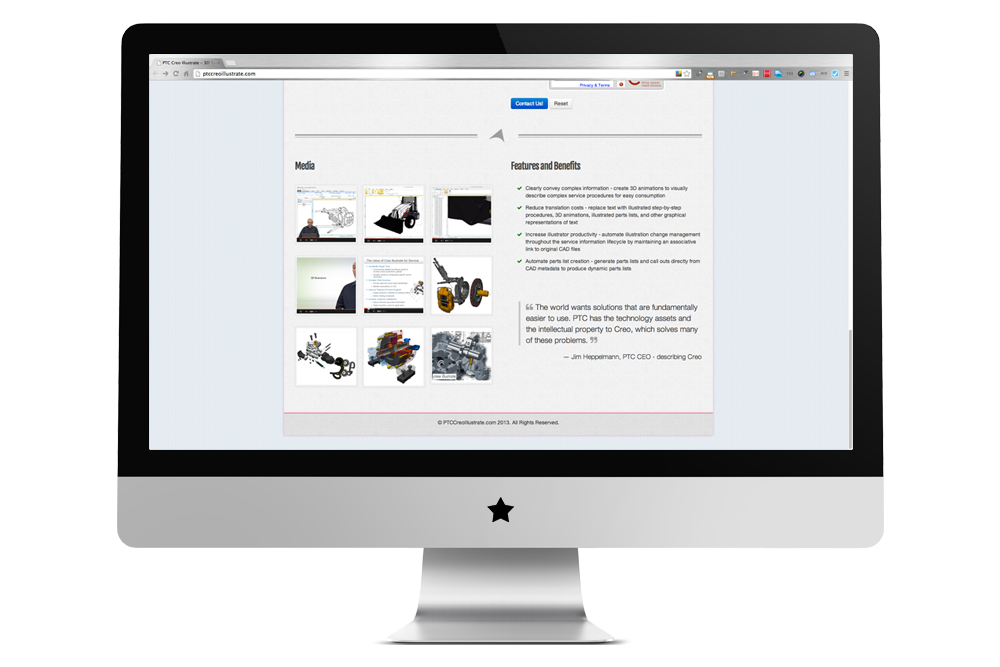
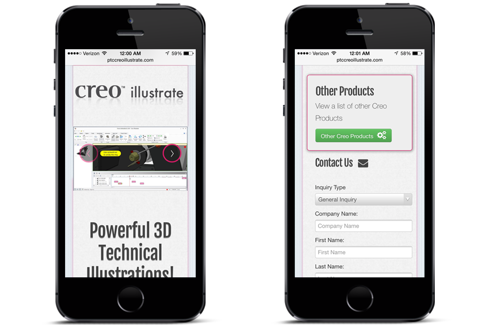

Creo Illustrate
- 

- 
- 
Project info
Background
Tristar is a Value Added Reseller of PTC software products. Creo Illustrate was a design I built out that would be the template for similar microsites Tristar wanted to launch. They wanted to build out a bunch of microsites that would attract traffic and bring in new leads to the company.
Process and Solutions
Because they wanted this site to be responsive to mobile devices I figured this was a good opportunity to use the Bootstrap framework in a project. Bootstrap allowed me to build this microsite and template quickly. And just by looking at it, you can't even really tell the site is using Bootstrap. I find that to many sites and apps now and days use Bootstrap but don't take the time to customize it enough to make it stand out or look original.